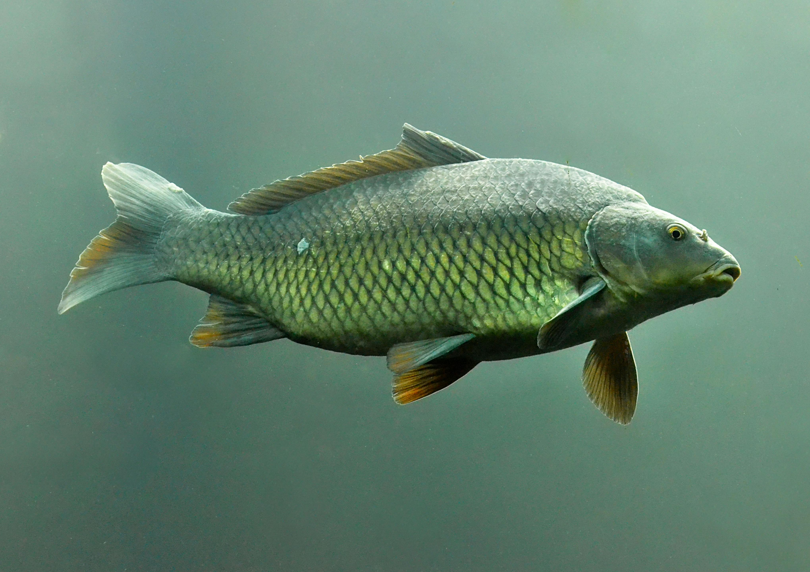
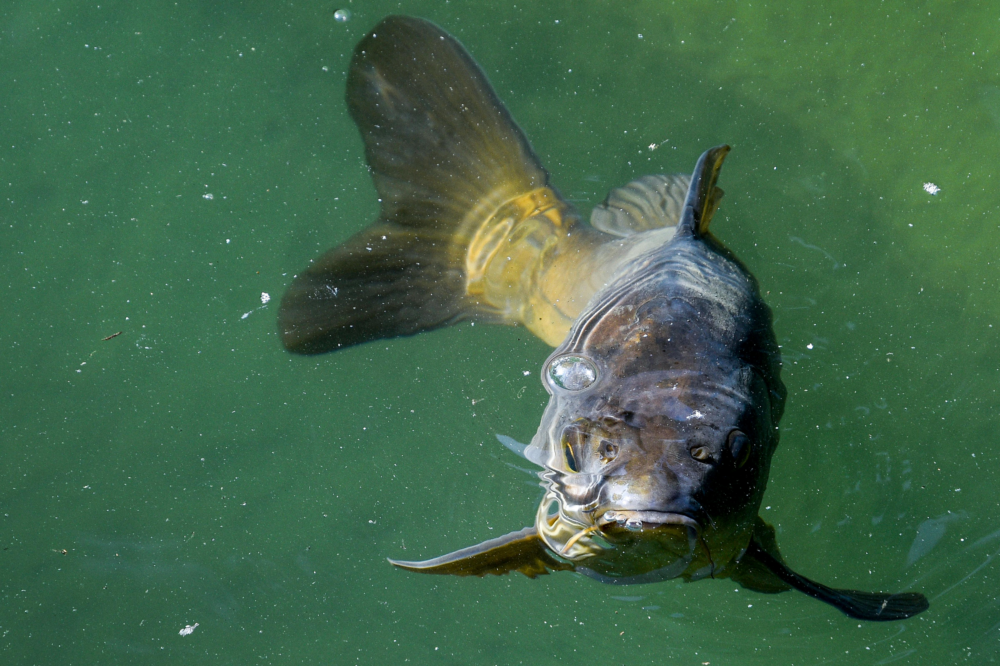
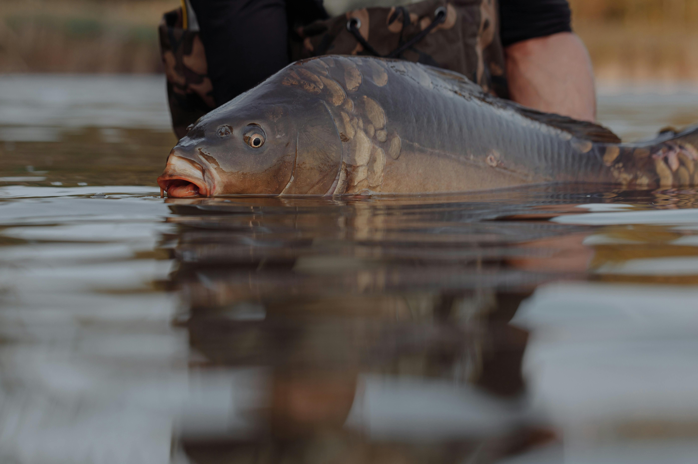
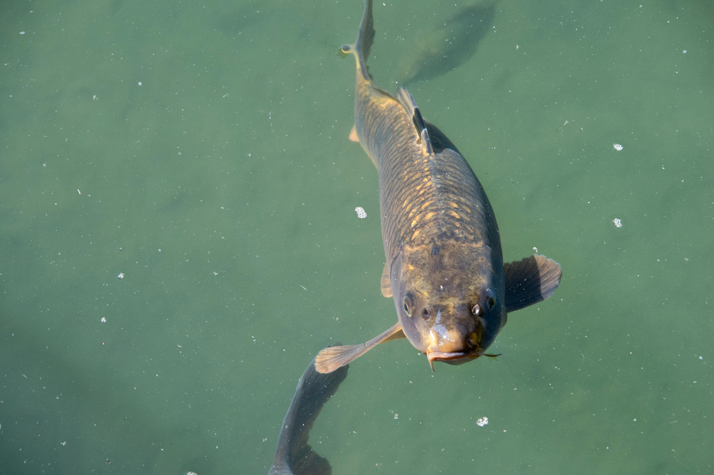
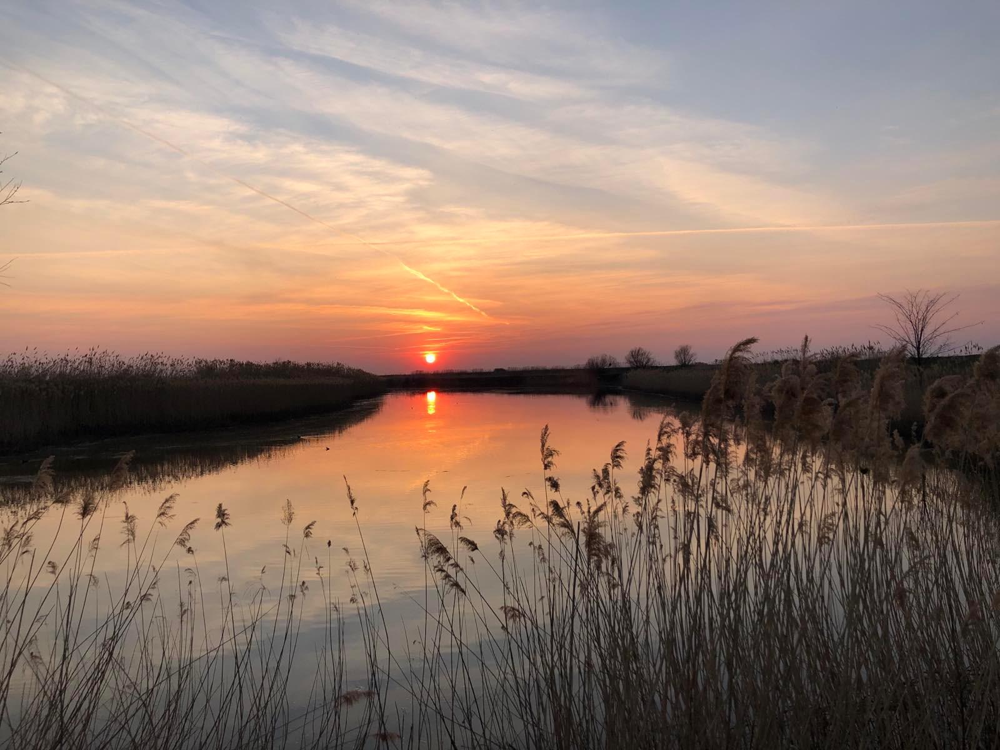
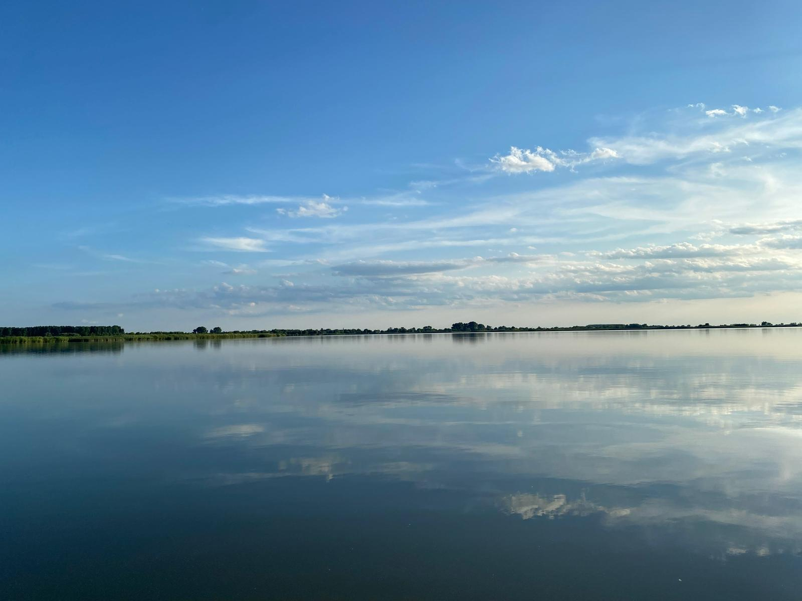
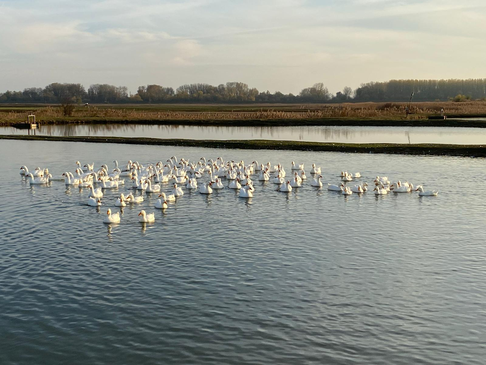
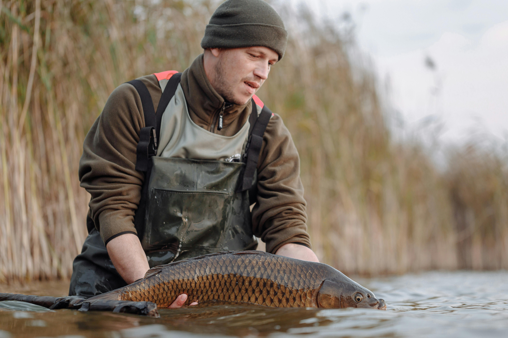
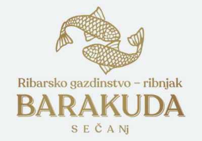

Šaran
Riba iz kontrolisanih uslova, idealna za svežu pripremu i tradicionalna jela. Kvalitetna, čvrsta i ukusna riba iz naših jezera.
Prosečna težina: 2–5 kg

Riba iz kontrolisanih uslova, idealna za svežu pripremu i tradicionalna jela. Kvalitetna, čvrsta i ukusna riba iz naših jezera.
Prosečna težina: 2–5 kg

Poznat po belom, nežnom mesu i blagom ukusu. Odličan izbor za roštilj, pečenje i lagana jela.
Prosečna težina: 3–7 kg

Lagano, sočno meso sa visokim nutritivnim vrednostima. Savršen za pečenje, prženje i pripremu fileta
Prosečna težina: 4–10 kg

Meso bez kostiju, puno ukusa i odlične teksture. Čest izbor restorana i profesionalnih kuvara.
Prosečna težina: 1–3 kg
Kompleks obuhvata 11 prostranih jezera koja se prostiru na velikoj površini i obezbeđuju idealne uslove za uzgoj kvalitetne slatkovodne ribe. Čista voda, prirodno okruženje i redovna kontrola kvaliteta čine naša jezera pouzdanim izvorom zdrave i sveže ribe tokom cele godine.

Jezera su okružena bogatom vegetacijom i čistim ekosistemom koji omogućava stabilan rast i razvoj ribe.

Ukupna površina jezera omogućava optimalan raspored i održavanje različitih vrsta riba u kontrolisanim uslovima.

Redovna analiza vode obezbeđuje idealne uslove za zdravu i kvalitetnu ribu tokom cele godine.

Jezera su prilagođena različitim fazama uzgoja — od mlađi do komercijalne ribe.

Ribnjak BARAKUDA obuhvata kompleks od 11 jezera smeštenih u prirodnom okruženju. Velika vodena površina, čista voda i kontrolisani uslovi omogućavaju uzgoj zdrave i kvalitetne slatkovodne ribe tokom cele godine.
Tradicija, iskustvo i briga o ekosistemu čine naš ribnjak pouzdanim izvorom sveže ribe za domaćinstva, restorane i distributivne centre.
Ribnjak BARAKUDA nalazi se u Sečnju, Partizanski put bb.
Telefon: 065/123-456
Email:
info@barakuda.rs
Za sve informacije o prodaji, porudžbinama i saradnji, možete nas kontaktirati putem telefona ili emaila.